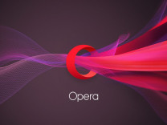

-
LINE Pay専用の決済デバイス発表、「決済手数料ゼロ」は対象外
LINE Payが独自開発の決済端末を発表しました。 3Gネットワーク対応のSIMスロット＆7000mAhバッテリーを内蔵し、レジに置くだけで決済機能を利用可能。中小店舗向けに年内に申込受付を開始します。 続きを読む
-
JapanTaxiがNTTドコモから約22億円調達、提携タクシーでd払いが可能に
日本交通の子会社で、タクシー配車アプリの「全国タクシー」などを提供するJapanTaxiは7月30日、NTTドコモとの資本業務提携を締結したと発表した。これにより、NTTドコモからJapanTaxiへの出資総額は22億5000万円だ。 続きを読む
-
-
食材を収穫前に“青田買い”できる「OWNERS」、良いものを作る人が報われるあるべき農業のかたち
スーパーで食材を買い物をするとき、「このスーパーは野菜がおいしい」などとお店単位で選ぶことはあって も、「この人が作った野菜はおいしい」と個人単位で食材を選ぶことはほとんどない。食材を買う人が作る人の顔を見て、そして、作る人が買う人の顔も見れる ような世界観をつくろうとしているスタートアップがある。2017年9月に設立されたukka（ウッカ）だ。 続きを読む
-
-
株取引をゼロから変える——調達資金60億円をスマートプラスへ投資するFinatextの構想
FinTechスタートアップのFinatext（フィナテキスト）は7月30日、総額60億円の資金調達実施を発表した。第三者割当の引受先はKDDI、ジャフコ、未来創生ファンド。また、同時にFinatextでは、KDDIとの業務提携についても明らかにしている。 2013年12月設立、創業5年のFinatextは、金融サービス提供、ビッグデータ解析、証券サービス提供を3柱に、「金融を“サービス”として再発明する」というビジョンを掲げる。 続きを読む
-

ブラウザーメーカーのOperaがNASDAQで取引開始
Operaが上場企業になった。ノルウェー拠点の同社は1株当り12ドルでIPOを実施した。取引は1株当り14.34ドル、19.5%高で始まった。同社はこのIPOで1.15億ドルを調達した。 続きを読む
-
-

Tesla、今度のブランド商品は1500ドルの…サーフボード
Teslaがブランド製品を出すのは珍しくない。カンパニー・ハット、Tシャツ、マグを作った。子供用のミニチュアTeslaやTesla車を充電するスーパーチャージャーを形どったUSB充電器といったイロモノもある。 続きを読む
-
ソフトバンク傘下のARMが米データ分析企業Treasure Dataを6億ドルで買収か
7月30日、ソフトバンクグループ傘下のコンピュータチップ設計企業ARM Holdingsが米国のデータ分析企業Treasure Data（英語サイト。日本のサイトはこちら）を買収することに合意したとBloombergが報じた（英語）。記事によれば、買収金額は約6億ドル（約 666億円）。関係者の情報によるもので、ARMおよびTreasure Dataは正式なコメントを発表していない。 続きを読む
-
スター・ウォーズ／エピソード9に、レイア役キャリー・フィッシャーが未公開シーンを使って登場
〈最後のジェダイ」をまだ見ていない人にはネタバレ注意〉なのだが、現時点でまだ見ていない人が、次回作の キャスティング発表を読むことなどあるのだろうか。 スターウォーズの世界では誰も本当に死ぬことはない。Star Wars: Episode IXの公式キャスティング・リストが発表になり、そこには親しみのある魅力的な名前が並んでいる。待望のランド役として戻ってきたビリー・ディー・ウィリ アムズと並んで、キャリー・フィッシャーの名前も載っている。 もちろんフィッシャーは残念ながら2016年に亡くなっているが、レイア・オーガナ姫は帰ってくる。CGを使ってキ… 続きを読む
-
-
証券ビジネスをプラットフォーム化するFinatextがKDDIなどから60億円を調達
金融サービス開発やビッグデータ解析、証券サービス提供を行うFinTechスタートアップのFinatextが7月30日、KDDI、ジャフコ、未来創生ファンドを引受先とした総額60億円の資金調達を実施したことが明らかになった。 続きを読む
-
SoftBankの投資戦略を検討する――WeWorkへの5億ドルもテーマの一つに過ぎない
今週、WeWorkは中国における子会社、WeWork ChinaがSoftBank、Temasek Holdings他から5億ドルの追加投資を得たことを発表した。これにより中国法人の価値は1年前の10億ドル（投資後会社評価額）から50億ドルに アップした。WeWork Chinaは前回の投資ラウンドをほぼ1年前、2017年の7月に発表している。 続きを読む


-
iPhoneやiPad、Apple Watchを医療現場で活用ーーOchsner Health Systemが目指す“ヘルスケア変革”
医療機関が抱える数々の問題をAppleのiOSデバイスなどを連携しアプリを導入することで解決へと導 く。それがOchsner Health System（オシュナー・ヘルスシステム）のRichard Milani氏が抱えるミッションだ。 Ochsnerは、30の病院、プライマリケアを含む80を超えるクリニックからなり、急性期および慢性期医療を提供するアメリカ南部沿岸地域で最大規模 の非営利大学医療センター。Milani氏はドクターでありながら、病院経営を改革すべくChief Clinical Transformation Officerとして病院の改革… 続きを読む
-
-
「WOVN.io」がスマホアプリ対応版の多言語化ツール「WOVN.app」提供開始
ウェブサイトの多言語化をたった1行のコード追加で実現するツール、それが「WOVN.io（ウォーブン ドットアイオー）」だ。サービスを運営するWovn Technologies（旧ミニマル・テクノロジーズ）は7月30日、スマホアプリに対応した多言語化ツール「WOVN.app（ウォーブンドットアッ プ）」のベータ版提供を開始した。 続きを読む
-
Discoveryも独自にストリーミングサービスを始めるかも？
Discovery Communicationsは、3月にScripps Networks Interactiveを146億ドルで買収したことに続いて、独自の消費者直販サービスの立ち上げを考え始めているようだ。AdWeekのレポート（有 償）によれば、DiscoveryのCEOであるDavid Zaslavが、業界のとあるイベントで、月額5ドルから8ドルでDIscoveryネットワークの番組を提供するサービスを検討していると発表したそう だ。 このサービスが米国限定であるかどうかは決定しておらず、また立ち上げ時期に対するいかなるヒントもCEOからは… 続きを読む
-
自宅で尿検査できるFDA認可のアプリが初登場
尿路感染はかなり不快な症状に悩まされる。体の構造上、女性に多くみられる病気で、実際、メイヨークリニックによると多くの女性が少なくとも一度は経験する病気なのだという。 続きを読む
-
Samsungの曲げられるディスプレイは何度落としても壊れなかった
Samsungの“壊れない”ディスプレイを、最初から疑問視する人びともいる。人間は、疑う動物だ。でもやはり、2メートルの高さから落としても壊れないし異状もないスマートフォンと聞けば、すごく心惹かれてしまう人が多いことも、否定できない。 そのSamsungの自由に曲げられるOLED(flexible OLED, 可撓性OLED)が実機に載るのは、いつのことか。 続きを読む
-
Amazonのウィッシュリスト（ほしい物リスト）を友だち家族など参加型＆会話型にできる
Amazonのウィッシュリスト(Wish List, ほしい物リスト)に、一部のユーザーが前から望んでいたコラボレーション機能がつくようだ。アメリカのamazon.comでは、一部のユーザーがすで に、そのモバイルアプリやWebサイトのウィッシュリストに“invite others”（ほかの人を招待する）オプションがある。これは自分のウィッシュリストのURLをメールやテキストメッセージやソーシャルアプリなどで共 有できる機能だ。そのURLをクリックすると、元々のオーナーと同じように、ウィッシュリストにアイテムを加えたり取… 続きを読む
-
Google Cloud CEOのDiane Greeneインタビュー：準備が整った私たちの戦いはこれからだ
今週Googleは、年次会議であるCloud Nextをサンフランシスコで開催している。2万5000人の開発者が参加するCloud Nextは、Google I/Oに比べるとクラウド特化型の会議となっている。Diane GreeneがGoogleのクラウドビジネスのCEOに就任したのは、数年前まだ参加者が2000人程度に過ぎず、Googleがまだこの会議をさびれ た埠頭で行っており、Googleがこの領域でやや遅れをとっていたときのことだ。そのころAmazonとMicrosoftは元気に進撃を続けていた。 その就任以来Googleは、ビジネスユー… 続きを読む
-
アイダホ州の囚人たちが刑務所支給のタブレットで20万ドルあまりのクレジットを偽造
アイダホ州の囚人たちが、刑務所が支給したタブレットのソフトウェアを使い、外界との唯一のつながりである 同機の上で25万ドル近いクレジットを偽造した。そのタブレットは刑務所向けに各種サービスや物品を提供している大手事業者JPayが作ったもので、囚人 たちはそれを使って、メール、音楽を聴く、送金するなどのタスクができる。一部のサービスは、有料だ。 続きを読む
-
Google Assistantで複数の一連の仕事をスケジューリングできるようになった
5月のI/OカンファレンスでGoogleは、Google Assistantの新しい機能を二つ発表した: それはルーチンとスケジュール、どちらも、何度も繰り返し行なうことを自動化するが、そのやり方がそれぞれ違う。 ルーチンは、複数のコマンドをまとめて一語で実行させる。たとえば“Hey Google, I’m awake”（起きたよ）と言ったら、目ざましを止め、明かりを点け、ニュースを読む。これに対してスケジュールは、日にちと時間を指定して一連のコマン ドを自動的に実行させる。 続きを読む
-
Amazonの顔認識ソフト、米議員の顔写真を犯罪者と誤認ー人権団体の試みで判明
注目を引くための試みとして、このほどACLU（アメリカ自由人権協会）が行ったものはこれ以上ないほどに 効果抜群だ。ACLUはこれまで「市民の自由と権利をおびやかす重大な懸念がある」としてAmazonの顔認識ソフトRekognitionについて注意 を喚起してきた。 続きを読む